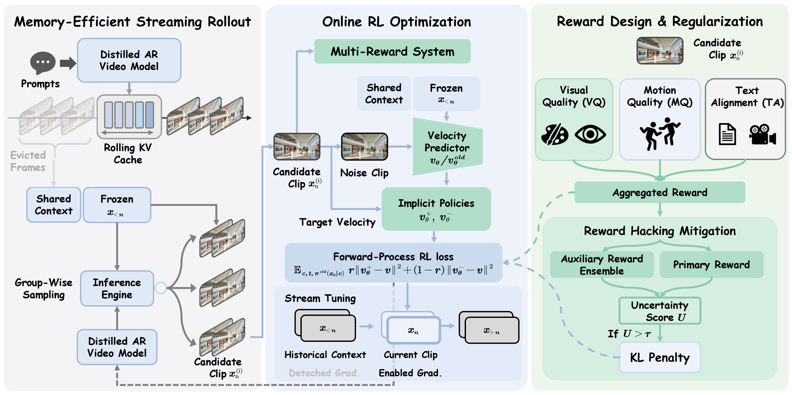

Astrolabe: Steering Forward-Process Reinforcement Learning for Distilled Autoregressive Video Models
TL;DR
We introduce Astrolabe, an efficient online Reinforcement Learning (RL) framework designed to align distilled autoregressive (AR) streaming video models with human visual preferences. Existing RL methods struggle with the memory demands of streaming architectures, so Astrolabe introduces three key innovations to solve this:
- Trajectory-Free Forward-Process RL: Contrasts positive and negative generations directly at inference endpoints to establish a policy improvement direction, entirely avoiding the computational and memory overhead of reverse-process unrolling.
- Memory-Efficient Streaming Training: Scales to long-video generation by generating sequences progressively via a rolling KV-cache. This allows RL updates to be applied exclusively to local clip windows while still conditioning on prior context for long-range coherence.
- Reward Hacking Mitigation: Employs a multi-reward objective measuring visual quality, motion dynamics, and text alignment. This is stabilized by a dynamic, uncertainty-aware selective KL penalty that restricts penalties only to samples lacking auxiliary consensus.
Ultimately, Astrolabe consistently enhances visual aesthetics and temporal consistency across multiple baseline models (e.g., Causal Forcing, LongLive) for both short and long video generation, without sacrificing real-time inference speed.
Abstract
Distilled autoregressive video models offer efficient streaming generation but often lack alignment with human visual preferences. Existing reinforcement learning (RL) frameworks are ill-suited for efficient streaming architectures, as they either require integrating rewards through computationally expensive re-distillation or rely on solver-coupled reverse processes that suffer from severe memory bottlenecks. In this paper, we introduce Astrolabe, a post-training RL framework designed for already-distilled models. By adapting forward-process RL, Astrolabe contrasts implicit positive and negative policies using only clean generated samples. This trajectory-free formulation avoids reverse-process unrolling, enabling memory-efficient and solver-agnostic training. To scale alignment to long videos without excessive memory usage, we propose a streaming training scheme. This approach generates extended sequences via a rolling KV-cache and applies RL updates exclusively to local clip windows with detached gradients. To prevent models from reward hacking at the expense of overall aesthetics, we employ a multi-reward formulation incorporating visual quality, motion quality, and text alignment. This is stabilized by selective regularization on high-uncertainty samples and dynamic reference updates. Experiments on multiple distilled models demonstrate consistent improvements, validating Astrolabe as a general-purpose alignment framework for streaming video generation.
Method Overview

Astrolabe Framework: Our method combines memory-efficient streaming rollout with forward-process RL optimization. (Left) Rolling KV cache with frame sinks enables bounded memory usage during long video generation. (Middle) Clip-level group-wise sampling generates multiple candidates in parallel for efficient exploration. (Right) Forward-process RL contrasts positive and negative policies using only clean samples, avoiding trajectory storage.
RL Results on Krea 14B
Astrolabe RL fine-tuning improves visual quality and temporal consistency on the Krea 14B base model.
RL Results on Causal Forcing 1.3B
Astrolabe RL fine-tuning improves visual quality and temporal consistency on the Causal Forcing 1.3B base model.
Comparisons with Baselines
Qualitative comparisons showing improvements over baseline distilled models and competing methods.
Multi-Prompt Long Video Generation
Astrolabe maintains coherence across multiple prompts in long-form video generation.
Multi-Prompt Scene Cut
Demonstrating smooth scene transitions with multiple prompts.
Citation
If you find this work useful, please consider citing:
@inproceedings{zhang2026astrolabe,
title={Astrolabe: Steering Forward-Process Reinforcement Learning for Distilled Autoregressive Video Models},
author={Zhang, Songchun and Xue, Zeyue and Fu, Siming and Huang, Jie and Kong, Xianghao and Ma, Yue and Huang, Haoyang and Duan, Nan and Rao, Anyi},
year={2026}
}
Acknowledgments
We thank the authors of Wan-Move, LongLive, Jenga, UltraPixel, ControlNeXt, and ToonCrafter for providing project page templates!